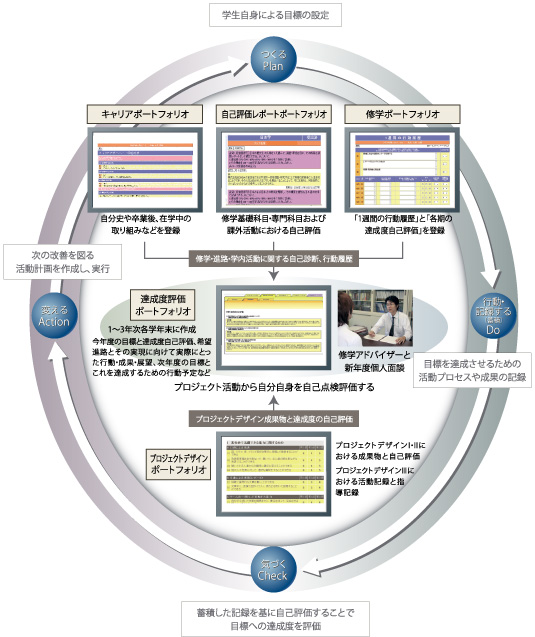

目次
- 背景
- はこだて未来大学の現状
- 問題
- 教育系の目的
- eポートフォリオシステム
- ヒアリング
- システムの全体像
- 使用技術の選定
- プロジェクトの進行方法
- まとめ
背景
- 学力重視の教育観から学習成果を重視する教育観に変化して、学生の学習活動に注目が行くようになった
- 学習の成果を証明する証拠が必要になった
はこだて未来大学の現状
- はこだて未来大学の講義は学習者から見て２つに分けることができる
- 教育者が学習者に対して知識や技能を教える受動的な学習
- PBL(Problem Based Learning)のように学習者が自ら知識や技能を身につけいていく能動的な学習
問題
- 能動的な学習の振り返りをサポートするシステムとしてHOMEやMoodleが導入されている
- しかし、能動的な学習の振り返りをサポートするシステムがこの大学にはない
教育系の目的
- 高度ICT演習における学習の振り返りをサポートする
- そのための手段としてeポートフォリオシステムの開発を行う
eポートフォリオシステム
- ポートフォリオとは学習の質を証明することができる紙媒体
- しかし
- ポートフォリオの管理に場所をとる
- 外部からのポーロフォリオの閲覧が難しい
- この問題を解決するために電子化したものがeポートフォリオである
- 
- 導入例 金沢工業大学
ヒアリング
- ステークホルダーである高度ICT演習の担当の先生にeポートフォリオシステムについてのヒアリングを行いました
- Q どうしてeポートフォリオシステムが必要なのか
- A 今まで学習してきたことを振り返ったり、学習の質の証拠としてつこうことができるようになる
- Q 学生や教員はどのように使うのか
- A PDCAサイクルを回したりフィードバックをする
- Q 学生や教員にはどのような機能があればいいのか
- A 成果物の管理・学習成果物の蓄積・ゴール設定・ポートフォリオの検索
システムの全体像
- 現在ポートフォリオの作成、成果物の蓄積、ゴール設定ができるようになっている
どんな感じで書けばいいのかわからない
使用技術の選定
- Python用の軽量ウェブアプリケーションフレームワークFlaskを使ってシステムを作ることになった
- RubyのSinatraに比べて日本語のドキュメントが多かった
- Ruby on Railsに比べてバージョンが変わってもそれほど大きな違いが現れない
- 今後の拡張性やを考えてPloneやMaharaなどの既存のシステムを使わず、１から作ることになった
学び
- グループ全体で１つにまとめるか学年に分けるか、それとも個人個人書くか
スケジュール
- 今後はこういうふうに活動する予定で

- スケジュールを整理
←
→
/
#